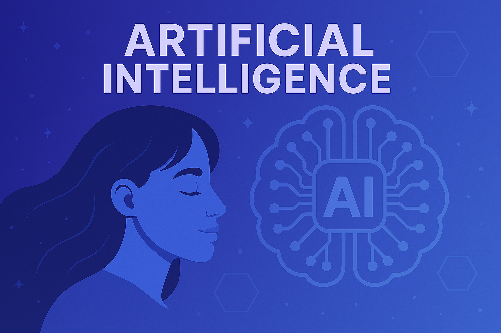

Pelajari teknologi AI dan cara kerjanya untuk membangun aplikasi cerdas di masa depan.
Artificial Intelligence (AI) merupakan cabang ilmu komputer yang berfokus pada pengembangan sistem cerdas yang mampu meniru berbagai perilaku manusia, seperti berpikir, belajar, mengenali gambar, memahami bahasa, serta mengambil keputusan secara mandiri. Teknologi AI telah diterapkan secara luas di berbagai bidang, mulai dari asisten virtual dan kendaraan otonom hingga analisis data besar, membuka peluang inovasi untuk masa depan yang lebih cerdas dan efisien.
Pelajari bagaimana teknologi Machine Learning memungkinkan sistem untuk belajar dari data dan meningkatkan akurasinya secara mandiri..
Pelajari bagaimana teknologi Computer Vision memungkinkan komputer memahami dan mengenali gambar serta video layaknya mata manusia...
Pelajari bagaimana Natural Language Processing (NLP) memungkinkan komputer memahami, menghasilkan, dan merespons bahasa manusia dalam bentuk teks maupun suara..
# Contoh Machine Learning sederhana
from sklearn.linear_model import LinearRegression
X = [[1], [2], [3], [4]]
y = [2, 4, 6, 8]
model = LinearRegression()
model.fit(X, y)
print(model.predict([[5]])) # Output: [10.]
# Contoh NLP dengan TextBlob
from textblob import TextBlob
kalimat = "Saya sangat senang belajar AI!"
analisis = TextBlob(kalimat)
print(analisis.sentiment) # Polarity dan Subjectivity
# Contoh Chatbot Sederhana
user_input = input("Ketik sesuatu: ")
if "hai" in user_input.lower():
print("Halo juga! Apa kabar?")
else:
print("Maaf, saya tidak mengerti.")
# Prediksi nilai menggunakan rumus AI
def prediksi_nilai(jam_belajar):
return jam_belajar * 2 + 3
print("Prediksi nilai:", prediksi_nilai(5)) # Output: 13